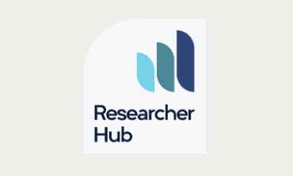

<!DOCTYPE html>
<html>
    <head>
        <title>University of Oxford</title>
        <link rel="stylesheet" type="text/css" href="tampilan oxford.css">
        <meta name="viewport" content="width=device-width, initial-scale=1">
    </head>
</html>

<body bgcolor="white">
    <header>
        <div class="uni"></div>
        <div class="homepage">RESEARCH</div>
    </header>


    <nav>
        <div class="menu-bar">
        <ul>
          <li><a href="index.html">Homepage</a></li>
          <li id="menu-products">
            <button onclick="myFunction()" class="dropbtn">About ▼</button>
            <ul id="dropdown-products">
                <div id="myDropdown" class="dropdown-content">
              <li><a href="OrganisationsOxClar.html">Organisation</a></li>
              <li><a href="牛津大学Clar.html">牛津大学</a></li>
              <li><a href="InternationalOxfordClar.html">International Oxford</a></li>
            </div>
            </ul>
          </li>
          <li><a href="ResearchClar.html">Research</a></li>
        </ul>
        </div>
      </nav>


    <script>
        function myFunction() {
            document.getElementById("myDropdown").classList.toggle("show");
        }

        window.onclick = function(event) {
  if (!event.target.matches('.dropbtn')) {
    var dropdowns = document.getElementsByClassName("dropdown-content");
    var i;
    for (i = 0; i < dropdowns.length; i++) {
      var openDropdown = dropdowns[i];
      if (openDropdown.classList.contains('show')) {
        openDropdown.classList.remove('show');
      }
    }
  }
}
    </script>

<div class="eh">Support for Researches</div>
<div class="post">Oxford provides a huge range of support for research staff, ranging from help finding funding, to career advice, to guidance for new principal investigators.  </div>

<div class="malone">Your primary source of information and support will be your departmental administrator and your principal investigator or line manager. These pages point you to the wealth of support available from your division and the wider University, whether you’ve just arrived and want to find your way around, need help applying for or managing grants, want to get in touch with other researchers, or are thinking about the next step in your career.</div>

<div class="malone">If you are in a research support role, please see the research section of the staff gateway for additional information and guidance.</div>

<div class="line"></div>
<div class="b"></div>
<div class="b"></div>
<div class="b"></div>


<div class="inv">.</div>

<footer>
  <div class="rama">CONNECT WITH US</div>
  <div class="mam">
      <a href="https://www.youtube.com/@oxforduniversity"></a></div>
  <div class="mam">
      <a href="https://www.instagram.com/oxford_uni/"></a></div>
  <p>&copy; 2024 - University of Oxford</p>
</footer>